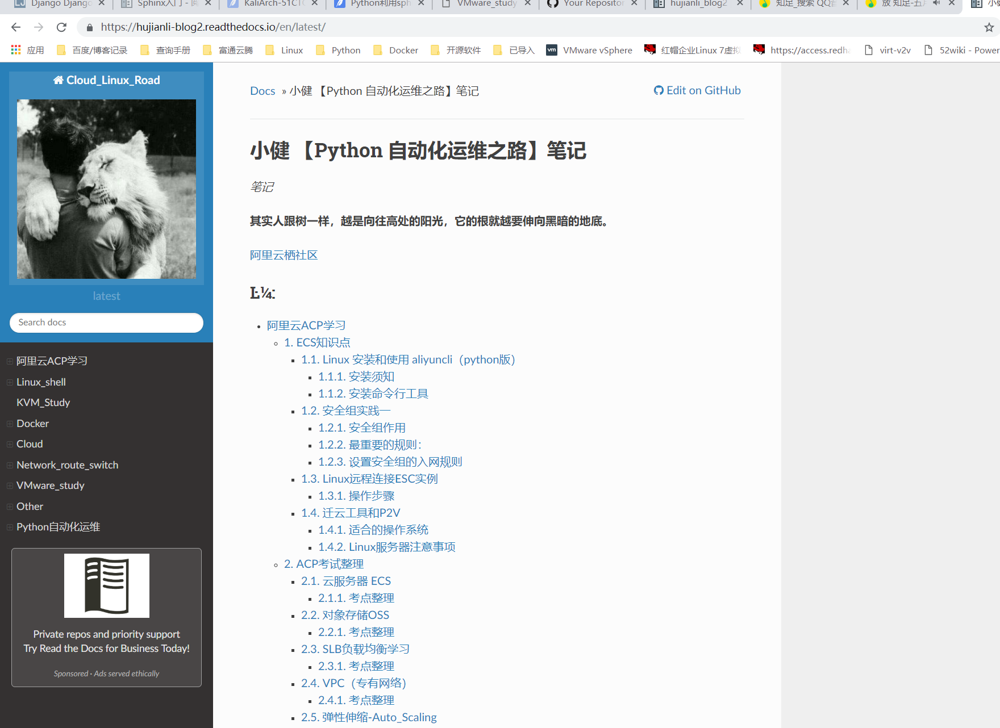
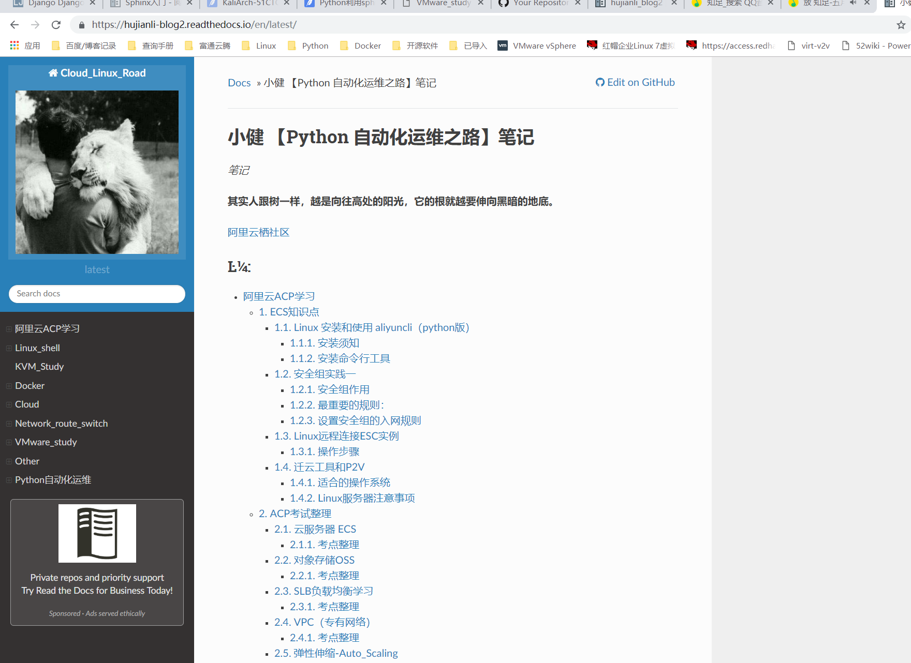

2.1. Python利用sphinx构建个人博客¶
2.1.1. 1.基础概念¶
利用sphinx+pandoc+github+readthedocs构建个人博客
Sphinx： 是一个基于ReStructuredText的文档生成工具，可以令人轻松的撰写出清晰且优美的文档, 由Georg Brandl在BSD许可证下开发。新版的Python文档就是由Sphinx生成的，并且它已成为Python项目首选的文档工具，同时它对C/C++项目也有很好的支持；并计划对其它开发语言添加特殊支持。
Read the Docs是一个在线文档托管服务，可以从各种版本控制系统中导入文档。支持webhooks，当你提交代码时，文档将被自动构建。
Pandoc：pandoc是一款开源转换工具，可以实现常见的格式转换。支持全平台操作，以命令行的方式进行转换。
2.1.2. 2.流程¶
Sphinx + GitHub + ReadtheDocs 作为一个文档写作工具，利用pandoc文本转换， 用Sphinx生成文档，GitHub托管文档，再导入到 ReadtheDocs。我们可以使用这个工具写文档、记笔记等。
2.1.3. 3.实施部署¶
3.1 安装环境
# 此处利用的centos7.4 系统默认python版本2.7
$ cat /etc/redhat-release
CentOS Linux release 7.3.1611 (Core)
$ python --version
Python 2.7.5
# 需要安装git
3.2 pip 安装sphinx环境
$ python -m pip install --upgrade pip
$ pip install sphinx sphinx-autobuild sphinx_rtd_theme
$ pip install recommonmark
3.3 初始化项目
$ mkdir /mywike && cd /mywiki
sphinx-quickstart # 执行初始化，以下为自己输入，其他可按照默认直接回车
> Separate source and build directories (y/n) [n]: y # 创建source目录
> Project name: KaliArch SHELL BLOG # 项目名称
> Author name(s): KaliArch # 作者名称
> Project release []: 1.0
3.4 目录结构
$ tree
.
├── build #文件夹，当你执行make html的时候，生成的html静态文件都存放在这里
├── make.bat
├── Makefile #编译文件用 make 命令时，可以使用这些指令来构建文档输出
└── source #文件夹，文档源文件全部应全部放在source根目录下
├── conf.py #Sphinx 的配置文件
├── index.rst
├── _static
└── _templates
3.5 修改配置文件
# 开启sys和os模块
import os,sys
# 配置主题
html_theme = 'alabaster'
# 支持LaTeX
# 支持中文检索
extensions = ['chinese_search']
source_suffix = ['.rst', '.md']
由于修改模板较麻烦可以直接git clone我的模板进行简单修改即可
3.6 安装第三方模块
$ yum install python-devel
# 如果报错可能由于下载超时，重新执行即可。
$ pip install -r requirements.txt -i https://pypi.douban.com/simple/
3.7 利用pandoc安装
# pandoc下载地址
$ cd /usr/local
$ wget -c https://github.com/jgm/pandoc/releases/download/2.2.3.2/pandoc-2.2.3.2-linux.tar.gz
$ ln -sv pandoc-2.2.3.2 pandoc
$ echo "export PATH=\$PATH:/usr/local/pandoc/bin" >/etc/profile.d/pandoc.sh
$ source /etc/profile.d/pandoc.sh
3.8 利用pandoc转换文件 利用pandoc将之前的markdown格式的博客源文件转换成rst格式
$ pandoc -s -t rst --toc markdown.md -o index.rst
$ pandoc -s -t rst --toc myshell-note.md -o myshell-note.rst
$ ls
conf.py index.rst myshell-note.md myshell-note.rst _static _templates
编辑index.rst,进行引用文件
.. toctree::
:maxdepth: 3
:caption: Contents:
myshell-note
3.9 编译生成html文件
$ cd /mywiki
$ make html # 生成网页文件
$ ls build/
doctrees html
2.1.4. 4.关联github和read the docs¶
readthedocs登陆地址
如果没有readthedocs账号可以通过github账号登陆 
 

2.1.5. 5.参考文献1¶
如何用Sphinx 、GitHub 、ReadtheDocs、搭建写书环境
https://wtf.readthedocs.io/en/latest/index.html
使用Sphinx + reST编写文档
2.1.6. 6.参考文献2¶
https://www.cnblogs.com/jonnyan/p/14207711.html
ReadTheDocs搭建第一本电子书
https://zhuanlan.zhihu.com/p/388640347
https://blog.csdn.net/techfield/article/details/83031177
参考链接： https://i4t.com/3587.html https://docs.readthedocs.io/en/stable/intro/getting-started-with-sphinx.html
https://sphinxguide.readthedocs.io/en/latest/sphinx_basics/settings.html
参考文献
https://blog.csdn.net/u010386121/article/details/83274964
相关示例